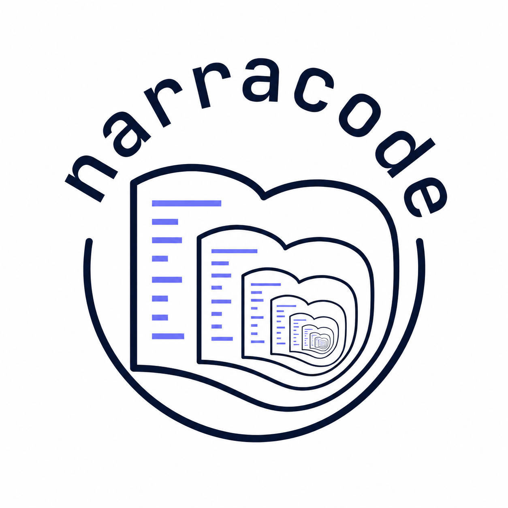
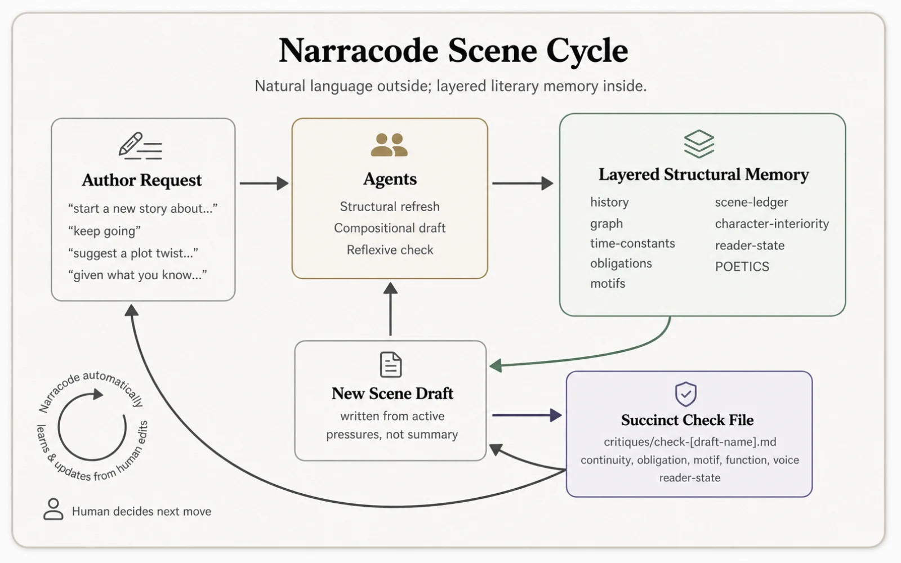
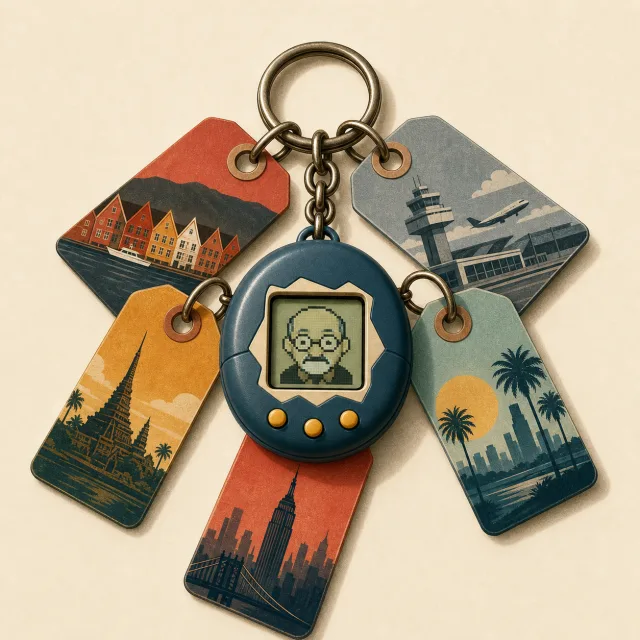
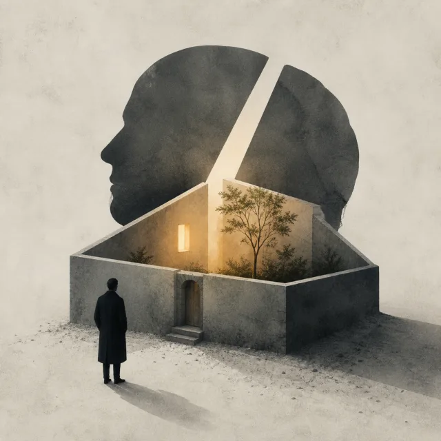
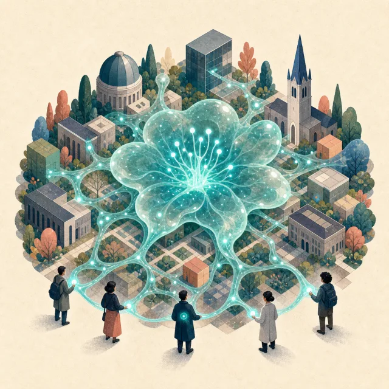

Narracode arises from an inquiry: can we build a literature AI-augmentation system on the same model as Claude Code? One that is structured, algorithmic, agentic — but for literary purposes?
Historically, AI falls into 2 camps: symbolic AI (plans, templates, expert systems) and connectionist AI (neural networks, large language models). Narracode is an attempt to bridge this gap. It is a neurosymbolic approach to narrative generation. It is a tool for orchestrating agents specifically for literary purposes.
Narracode emerged from the realization that the intrinsic embodied complexity of nuanced narrative might become computationally tractable by recursively entwining a LLM with a symbolic harness that is somewhat analogous to a 'Claude Code' re-purposed for narrative literature.
Narracode operates as an autocorrecting multi-agent system. Rather than relying on single-shot prompts, it orchestrates specialized roles—Reading, Structural, Compositional, and Reflexive agents—working in strictly separated passes.
As the system advances, it runs in the background to auto-refine a layered symbolic working memory. Beyond character graphs, time-constants, and history, the harness now tracks obligations, motifs, scene function, character interiority, and reader-state. The goal is not just factual coherence, but preserving accumulated literary pressure across scenes.






David Jhave Johnston is a digital poet working in emergent domains. Author of ReRites (Anteism, 2019) and Aesthetic Animism (MIT Press, 2016). He is currently an AI-narrative researcher at the UiB Centre for Digital Narrative (2023–27) with the Extending Digital Narrative project.
This work was partially supported by the Research Council of Norway through its Centres of Excellence scheme, project number 332643 (Center for Digital Narrative), and its SAMKUL project scheme, project number 335129 (Extending Digital Narrative).